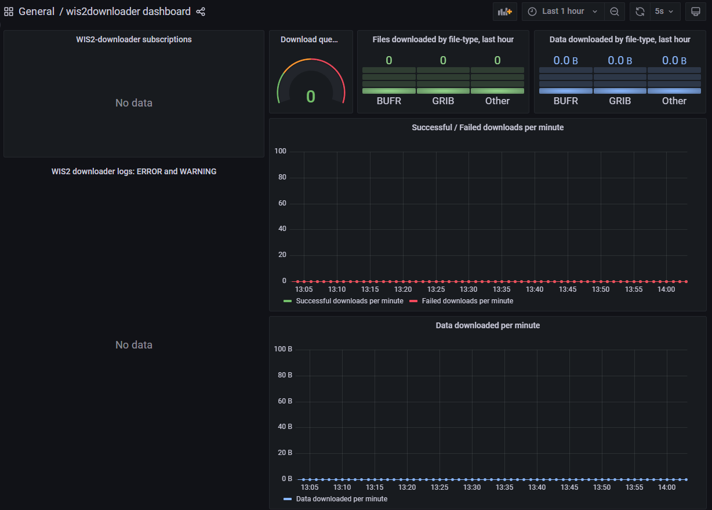

Загрузка данных из WIS2 с использованием wis2downloader
Цели обучения!
К концу этой практической сессии вы сможете:
- использовать "wis2downloader" для подписки на уведомления о данных WIS2 и загрузки данных на вашу локальную систему
- просматривать статус загрузок на панели мониторинга Grafana
- научиться настраивать wis2downloader для подписки на брокер, отличный от брокера по умолчанию
Введение
В этой сессии вы научитесь настраивать подписку на WIS2 Broker и автоматически загружать данные на вашу локальную систему с использованием сервиса "wis2downloader", включенного в wis2box.
О wis2downloader
Сервис wis2downloader также доступен как отдельный сервис, который может быть запущен на другой системе, отличной от той, которая публикует уведомления WIS2. Подробнее об использовании wis2downloader как отдельного сервиса можно узнать на wis2downloader.
Если вы хотите разработать собственный сервис для подписки на уведомления WIS2 и загрузки данных, вы можете использовать исходный код wis2downloader в качестве примера.
Подготовка
Перед началом работы войдите в вашу виртуальную машину студента и убедитесь, что ваш экземпляр wis2box запущен и работает.
Основы wis2downloader
Сервис wis2downloader включен в состав wis2box как отдельный контейнер, определенный в файлах Docker Compose. Контейнер Prometheus в wis2box настроен на сбор метрик из контейнера wis2downloader, и эти метрики можно визуализировать на панели мониторинга Grafana.
Просмотр панели мониторинга wis2downloader в Grafana
Откройте веб-браузер и перейдите на панель мониторинга Grafana для вашего экземпляра wis2box, используя адрес http://YOUR-HOST:3000.
Нажмите на "dashboards" в меню слева, затем выберите wis2downloader dashboard.
Вы должны увидеть следующую панель мониторинга:

Эта панель мониторинга основана на метриках, публикуемых сервисом wis2downloader, и отображает статус загрузок, которые выполняются в данный момент.
В левом верхнем углу вы можете увидеть активные подписки.
Оставьте эту панель мониторинга открытой, так как вы будете использовать её для мониторинга процесса загрузки в следующем упражнении.
Просмотр конфигурации wis2downloader
Сервис wis2downloader в wis2box можно настроить с использованием переменных окружения, определенных в вашем файле wis2box.env.
Следующие переменные окружения используются wis2downloader:
- DOWNLOAD_BROKER_HOST: Имя хоста MQTT брокера для подключения. По умолчанию globalbroker.meteo.fr
- DOWNLOAD_BROKER_PORT: Порт MQTT брокера для подключения. По умолчанию 443 (HTTPS для веб-сокетов)
- DOWNLOAD_BROKER_USERNAME: Имя пользователя для подключения к MQTT брокеру. По умолчанию everyone
- DOWNLOAD_BROKER_PASSWORD: Пароль для подключения к MQTT брокеру. По умолчанию everyone
- DOWNLOAD_BROKER_TRANSPORT: websockets или tcp, механизм передачи для подключения к MQTT брокеру. По умолчанию websockets
- DOWNLOAD_RETENTION_PERIOD_HOURS: Период хранения загруженных данных в часах. По умолчанию 24
- DOWNLOAD_WORKERS: Количество потоков загрузки. По умолчанию 8. Определяет количество параллельных загрузок.
- DOWNLOAD_MIN_FREE_SPACE_GB: Минимальное свободное место в ГБ на диске для хранения загрузок. По умолчанию 1.
Чтобы просмотреть текущую конфигурацию wis2downloader, выполните следующую команду:
cat ~/wis2box/wis2box.env | grep DOWNLOAD
Просмотр конфигурации wis2downloader
Какой MQTT брокер используется по умолчанию для подключения wis2downloader?
Какой период хранения загруженных данных установлен по умолчанию?
Нажмите, чтобы увидеть ответ
MQTT брокер по умолчанию для подключения wis2downloader — это globalbroker.meteo.fr.
Период хранения загруженных данных по умолчанию составляет 24 часа.
Обновление конфигурации wis2downloader
Чтобы обновить конфигурацию wis2downloader, вы можете отредактировать файл wis2box.env. Для применения изменений выполните команду для перезапуска стека wis2box:
python3 wis2box-ctl.py start
После этого вы увидите, как сервис wis2downloader перезапустится с новой конфигурацией.
Вы можете оставить конфигурацию по умолчанию для следующего упражнения.
Интерфейс командной строки wis2downloader
Чтобы получить доступ к интерфейсу командной строки wis2downloader в составе wis2box, войдите в контейнер wis2downloader, используя следующую команду:
python3 wis2box-ctl.py login wis2downloader
Используйте следующую команду, чтобы отобразить список активных подписок:
wis2downloader list-subscriptions
Эта команда вернет пустой список, так как подписки еще не настроены.
Загрузка данных GTS через WIS2 Global Broker
Если вы оставили конфигурацию wis2downloader по умолчанию, он в настоящее время подключен к WIS2 Global Broker, размещенному Météo-France.
Настройка подписки
Используйте следующую команду cache/a/wis2/de-dwd-gts-to-wis2/#, чтобы подписаться на данные, публикуемые шлюзом GTS-to-WIS2, размещенным DWD, доступным через Global Caches:
wis2downloader add-subscription --topic cache/a/wis2/de-dwd-gts-to-wis2/#
Затем выйдите из контейнера wis2downloader, набрав exit:
exit
Проверка загруженных данных
Проверьте панель мониторинга wis2downloader в Grafana, чтобы увидеть добавленную подписку. Подождите несколько минут, и вы должны увидеть начало загрузок. Перейдите к следующему упражнению, как только убедитесь, что загрузки начались.
Сервис wis2downloader в wis2box сохраняет данные в директорию 'downloads', которая находится в каталоге, определенном как WIS2BOX_HOST_DATADIR в вашем файле wis2box.env. Чтобы просмотреть содержимое директории загрузок, выполните следующую команду:
ls -R ~/wis2box-data/downloads
Обратите внимание, что загруженные данные хранятся в директориях, названных в соответствии с темой, на которой было опубликовано уведомление WIS2.
Просмотр загруженных данных
Какие директории вы видите в директории загрузок?
Видите ли вы какие-либо загруженные файлы в этих директориях?
Нажмите, чтобы увидеть ответ
Вы должны увидеть структуру директорий, начинающуюся с cache/a/wis2/de-dwd-gts-to-wis2/, под которой будут находиться дополнительные директории, названные в соответствии с заголовками бюллетеней GTS загруженных данных.
В зависимости от времени начала подписки, вы можете или не можете видеть загруженные файлы в этой директории. Если файлов пока нет, подождите еще несколько минут и проверьте снова.
Давайте очистим подписку и загруженные данные перед переходом к следующему упражнению.
Войдите обратно в контейнер wis2downloader:
python3 wis2box-ctl.py login wis2downloader
и удалите подписку, которую вы создали, используя следующую команду:
wis2downloader remove-subscription --topic cache/a/wis2/de-dwd-gts-to-wis2/#
Удалите загруженные данные, используя следующую команду:
rm -rf /wis2box-data/downloads/cache/*
И выйдите из контейнера wis2downloader, набрав exit:
exit
Проверьте панель мониторинга wis2downloader в Grafana, чтобы убедиться, что подписка удалена. Вы должны увидеть остановку загрузок.
О шлюзах GTS-to-WIS2
В настоящее время существуют два шлюза GTS-to-WIS2, публикующих данные через WIS2 Global Broker и Global Caches:
- DWD (Германия): centre-id=de-dwd-gts-to-wis2
- JMA (Япония): centre-id=jp-jma-gts-to-wis2
Если в предыдущем упражнении вы замените de-dwd-gts-to-wis2 на jp-jma-gts-to-wis2, вы получите уведомления и данные, публикуемые шлюзом GTS-to-WIS2 от JMA.
Темы origin и cache
При подписке на тему, начинающуюся с origin/, вы получите уведомления с каноническим URL, указывающим на сервер данных, предоставляемый WIS Центром, публикующим данные.
При подписке на тему, начинающуюся с cache/, вы получите несколько уведомлений для одних и тех же данных, по одному для каждого Global Cache. Каждое уведомление будет содержать канонический URL, указывающий на сервер данных соответствующего Global Cache. Сервис wis2downloader загрузит данные с первого доступного канонического URL.
Загрузка примерных данных с WIS2 Training Broker
В этом упражнении вы подпишетесь на WIS2 Training Broker, который публикует примерные данные для учебных целей.
Изменение конфигурации wis2downloader
Это демонстрирует, как подписаться на брокер, отличный от брокера по умолчанию, и позволит вам загрузить данные, публикуемые WIS2 Training Broker.
Отредактируйте файл wis2box.env и измените DOWNLOAD_BROKER_HOST на wis2training-broker.wis2dev.io, DOWNLOAD_BROKER_PORT на 1883 и DOWNLOAD_BROKER_TRANSPORT на tcp:
# downloader settings
DOWNLOAD_BROKER_HOST=wis2training-broker.wis2dev.io
DOWNLOAD_BROKER_PORT=1883
DOWNLOAD_BROKER_USERNAME=everyone
DOWNLOAD_BROKER_PASSWORD=everyone
# download transport mechanism (tcp or websockets)
DOWNLOAD_BROKER_TRANSPORT=tcp
Затем снова выполните команду 'start', чтобы применить изменения:
python3 wis2box-ctl.py start
Проверьте логи wis2downloader, чтобы убедиться, что подключение к новому брокеру прошло успешно:
docker logs wis2downloader
Вы должны увидеть следующее сообщение в логах:
...
INFO - Connecting...
INFO - Host: wis2training-broker.wis2dev.io, port: 1883
INFO - Connected successfully
Настройка новых подписок
Теперь мы настроим новую подписку на тему для загрузки данных о траекториях циклонов с WIS2 Training Broker.
Войдите в контейнер wis2downloader:
python3 wis2box-ctl.py login wis2downloader
И выполните следующую команду (скопируйте и вставьте, чтобы избежать ошибок):
wis2downloader add-subscription --topic origin/a/wis2/int-wis2-training/data/core/weather/prediction/forecast/medium-range/probabilistic/trajectory
Выйдите из контейнера wis2downloader, набрав exit.
Проверка загруженных данных
Подождите, пока вы не увидите начало загрузок на панели мониторинга wis2downloader в Grafana.
Проверьте, что данные были загружены, снова проверив логи wis2downloader:
docker logs wis2downloader
Вы должны увидеть сообщение в логах, похожее на следующее:
[...] INFO - Message received under topic origin/a/wis2/int-wis2-training/data/core/weather/prediction/forecast/medium-range/probabilistic/trajectory
[...] INFO - Downloaded A_JSXX05ECEP020000_C_ECMP_...
Снова проверьте содержимое директории загрузок:
ls -R ~/wis2box-data/downloads
Вы должны увидеть новую директорию с именем origin/a/wis2/int-wis2-training/data/core/weather/prediction/forecast/medium-range/probabilistic/trajectory, содержащую загруженные данные.
Просмотр загруженных данных
Какой формат файла у загруженных данных?
Нажмите, чтобы увидеть ответ
Загруженные данные находятся в формате BUFR, что указано расширением файла .bufr.
Далее попробуйте добавить еще две подписки для загрузки данных о месячных аномалиях температуры поверхности и глобальных прогнозах ансамблей по следующим темам:
origin/a/wis2/int-wis2-training/data/core/weather/prediction/forecast/medium-range/probabilistic/globalorigin/a/wis2/int-wis2-training/data/core/climate/experimental/anomalies/monthly/surface-temperature
Подождите, пока вы не увидите начало загрузок на панели мониторинга wis2downloader в Grafana.
Снова проверьте содержимое директории загрузок:
ls -R ~/wis2box-data/downloads
Вы должны увидеть новые директории, соответствующие темам, на которые вы подписались, содержащие загруженные данные.
Заключение
Поздравляем!
В этой практической сессии вы научились:
- использовать 'wis2downloader' для подписки на WIS2 Broker и загрузки данных на вашу локальную систему
- просматривать статус загрузок на панели мониторинга Grafana
- изменять конфигурацию wis2downloader для подписки на другой брокер
- просматривать загруженные данные на вашей локальной системе